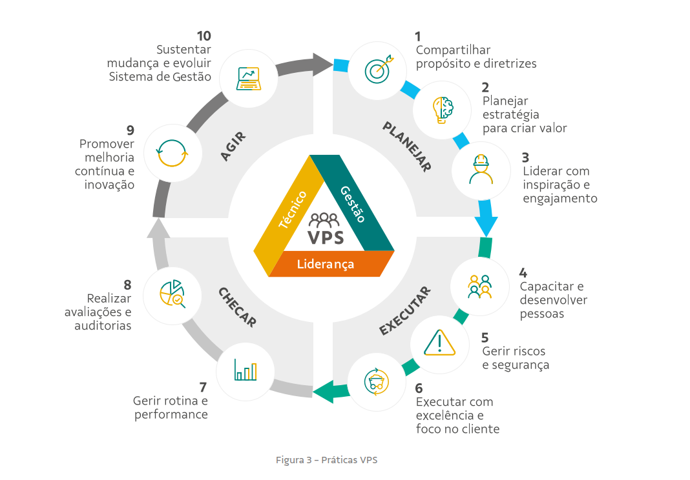

Portal Executivo · Modelo VPS
Portal de Integridade
Estrutural
Central operacional estruturada pelas 10 práticas do Modelo VPS — reunindo inspeções, riscos, execução, auditorias, melhoria contínua e evolução do sistema em um único ambiente de gestão.
0
Módulos ativos
10
Práticas VPS
PDCA
Lógica do sistema

Planejar
Práticas 1, 2 e 3
Propósito · Estratégia · Liderança
Executar
Práticas 4, 5 e 6
Pessoas · Riscos · Excelência
Checar
Práticas 7 e 8
Rotina · Auditorias
Agir
Práticas 9 e 10
Melhoria · Evolução
Dashboard VPS
Carregando…